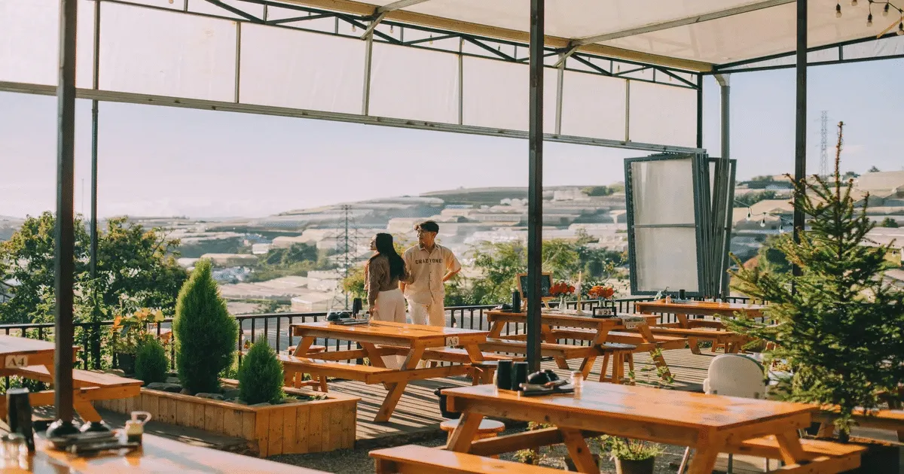
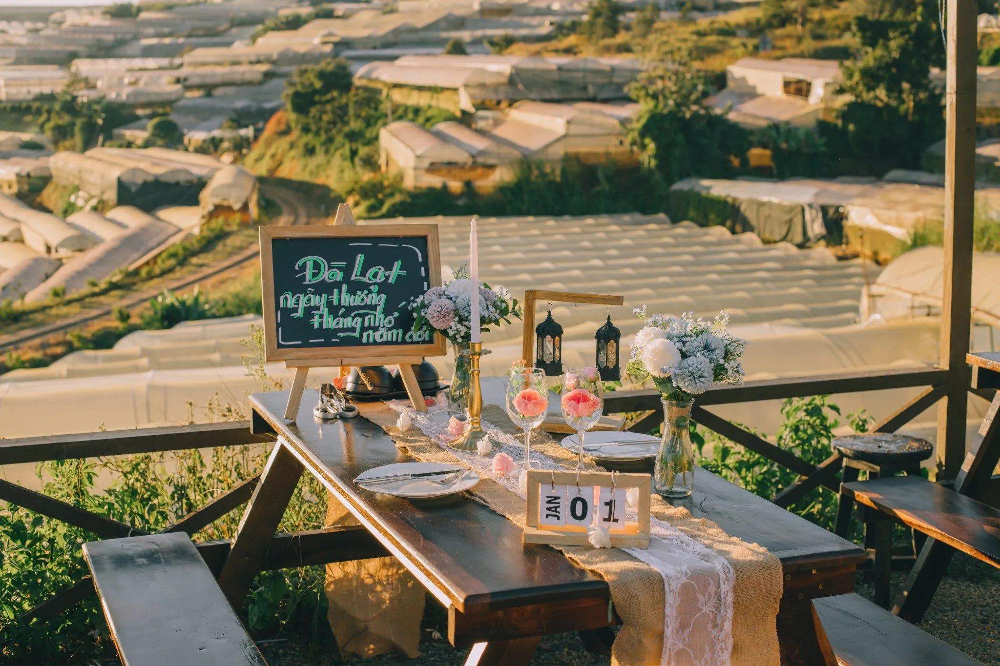
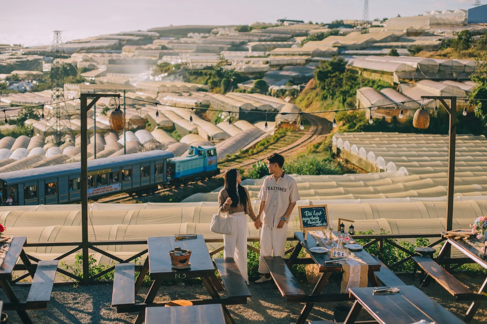
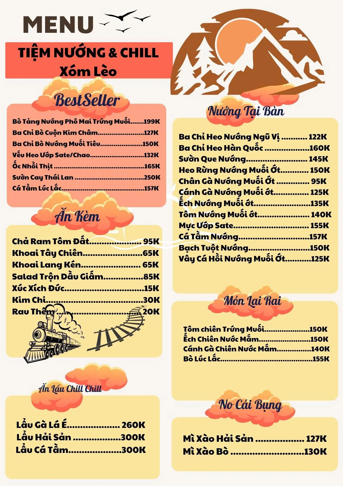

Đi ăn ở Đà Lạt? Ghé Tiệm Nướng & Chill Xóm Lèo nhé!

Mục lục bài viết
- 1. Đi ăn ở Đà Lạt không chỉ để no bụng, mà còn để no cảm xúc
- 2. Đi ăn ở Đà Lạt? Định vị địa lý lý tưởng – tách biệt đủ để riêng tư, gần gũi đủ để dễ tìm.
- 3. Đi ăn ở Đà Lạt? Setup bàn miễn phí – chill tự nhiên, không cần gồng!
- 4. Đi ăn ở Đà Lạt? View săn hoàng hôn cực đỉnh – chill trọn từng ánh nắng cuối ngày!
- 5. Đi ăn ở Đà Lạt? Trải nghiệm cực hiếm – săn khoảnh khắc xe lửa chạy ngang lúc đêm xuống!
- 6. Đi ăn ở Đà Lạt? Ngắm nhà lồng lên đèn – dải ngân hà giữa mặt đất mộng mơ!
- 7. Đi ăn ở Đà Lạt? Nhạc acoustic & saxophone live – nơi âm nhạc chạm đến cảm xúc sâu lắng!
- 8. Đi ăn ở Đà Lạt? Thực đơn nướng ấm lòng – đậm vị chill giữa lạnh sương cao nguyên!
- 9. Đi ăn ở Đà Lạt? Giá cả phải chăng – chill thả ga, không sợ thiếu!
- 10. Đà Lạt chơi ở đâu? Một tối chill chuẩn gu tại Xóm Lèo – Gợi ý lịch trình lý tưởng
- 11. Đi ăn ở Đà Lạt? Muốn chill đúng gu, đừng quên liên hệ và đặt chỗ trước tại Tiệm Nướng & Chill Xóm Lèo để giữ ngay vị trí view đẹp nhé!
Nếu bạn đang tìm một nơi đi ăn ở Đà Lạt mà không chỉ đơn thuần là thưởng thức món ngon, thì Tiệm Nướng & Chill Xóm Lèo chính là câu trả lời. Nằm giữa một thung lũng yên bình cuối đường Hùng Vương, nơi đây mang đến trải nghiệm hiếm có: vừa ăn uống ngoài trời giữa thiên nhiên, vừa ngắm hoàng hôn, săn xe lửa, chill với nhạc acoustic và thổi kèn saxophone dưới bầu trời đầy sao.

Không gian được setup miễn phí, riêng tư, ấm cúng và cực kỳ lãng mạn, đặc biệt lý tưởng cho những buổi hẹn hò, nhóm bạn hoặc solo chill. Tại Xóm Lèo, "đi ăn" không còn là một hoạt động vội vàng – mà là một hành trình cảm xúc, nơi mỗi khoảnh khắc đều khiến bạn muốn dừng lại thật lâu.
1. Đi ăn ở Đà Lạt không chỉ để no bụng, mà còn để no cảm xúc
Nếu bạn từng nghĩ "đi ăn ở Đà Lạt" chỉ là chọn một nơi ấm áp để lấp đầy dạ dày, thì có lẽ bạn chưa từng ghé Tiệm Nướng & Chill Xóm Lèo – một không gian ngoài trời tuyệt đẹp, nơi ăn uống không chỉ là hoạt động thường nhật mà là một trải nghiệm cảm xúc trọn vẹn.
Ẩn mình giữa một thung lũng trên đường Huỳnh Tấn Phát, Xóm Lèo mang đến một không gian chill đúng chất Đà Lạt: lặng lẽ, riêng tư, lãng mạn – nhưng vẫn đủ vui để nhóm bạn tụ họp, hẹn hò hay đơn giản là một chiều hoàng hôn thư giãn sau một ngày rong chơi.

2. Đi ăn ở Đà Lạt? Định vị địa lý lý tưởng – tách biệt đủ để riêng tư, gần gũi đủ để dễ tìm.
📍 Địa chỉ: 113 Huỳnh Tấn Phát, Phường 11, TP. Đà Lạt
Để đến được quán, từ trung tâm chợ Đà Lạt, bạn đi dọc đường Hùng Vương rồi rẽ vào đường Huỳnh Tấn Phát, hướng về phía Trại Mát. Đi thẳng theo đường Huỳnh Tấn Phát qua cầu vượt đường sắt sẽ thấy tiệm nằm bên trái.
Quán nằm ẩn mình trong một "xóm nhỏ" lưng chừng đồi, mang đến cho bạn một không gian riêng tư nhưng vẫn rất dễ tìm. Từ đây, bạn có thể phóng tầm mắt ngắm trọn thung lũng với những nhà kính lung linh ánh đèn vào buổi tối. Đôi khi, những chuyến tàu hỏa lướt qua trong ánh hoàng hôn tạo nên một khung cảnh vô cùng lãng mạn. Đây là nơi bạn có thể cảm nhận sự bình yên, mọi hối hả dường như chậm lại, giúp bạn hoàn toàn thư giãn.

3. Đi ăn ở Đà Lạt? Setup bàn miễn phí – chill tự nhiên, không cần gồng!
Một điều đặc biệt chỉ có tại Tiệm Nướng & Chill Xóm Lèo là: dù bạn đi 1 người, 2 người, hay cả nhóm 10 người – bạn vẫn được set up không gian riêng miễn phí hoàn toàn.
Không phụ thu view đẹp, không giới hạn thời gian ngồi. Tất cả đều được chuẩn bị kỹ càng trước khi bạn đến: từ bàn ghế gỗ ấm cúng, gối ngồi, chăn ấm, đèn dầu, cho đến lều nhỏ hoặc ô che nhẹ nhàng nếu trời lạnh hay có sương.
Đây cũng là lý do khiến tiệm trở thành điểm hẹn lý tưởng cho:
- Những cặp đôi tìm nơi hẹn hò riêng tư, lãng mạn
- Những nhóm bạn muốn chill bên đồ nướng và nhạc live
- Những "kẻ lữ hành cô đơn" cần góc nhỏ yên tĩnh giữa Đà Lạt mù sương

4. Đi ăn ở Đà Lạt? View săn hoàng hôn cực đỉnh – chill trọn từng ánh nắng cuối ngày!
Mỗi buổi chiều tại Đà Lạt luôn mang một vẻ đẹp riêng – và tại Xóm Lèo, bạn sẽ được "săn hoàng hôn" theo cách không thể tuyệt hơn.
Từ vị trí của tiệm, hướng tầm nhìn thẳng ra thung lũng, đồi thông và đường ray xe lửa, ánh hoàng hôn len lỏi qua từng lớp mây, rọi xuống mái nhà, rừng cây và những vòm nhà kính, tạo nên một bức tranh sơn dầu sống động mà bất cứ tín đồ chill nào cũng muốn lưu giữ.
Đến sớm từ 16h30 – 17h để chọn góc đẹp, gọi một ly trà nóng hoặc vang đỏ nhẹ – là bạn đã có một buổi chiều đáng nhớ ở Đà Lạt.

5. Đi ăn ở Đà Lạt? Trải nghiệm cực hiếm – săn khoảnh khắc xe lửa chạy ngang lúc đêm xuống!
Chỉ có vài nơi ở Đà Lạt bạn mới có thể bắt trọn khoảnh khắc đoàn tàu Trại Mát nhẹ nhàng lướt qua giữa màn đêm – và Xóm Lèo là một trong số đó.
Giữa bầu không gian êm ả, tiếng còi tàu vang vọng qua núi rừng, ánh đèn từ đoàn tàu phản chiếu lên nền trời tím than – tất cả mang đến cảm giác như bước vào một thước phim lãng mạn châu Âu.
Săn xe lửa ở đây không cần cầu kỳ – chỉ cần bạn ngồi đúng chỗ, đúng thời điểm, và để tâm hồn mình sẵn sàng cảm nhận.

6. Đi ăn ở Đà Lạt? Ngắm nhà lồng lên đèn – dải ngân hà giữa mặt đất mộng mơ!
Khi hoàng hôn tắt hẳn và thành phố lên đèn, bạn sẽ thấy một khung cảnh mê hoặc từ tiệm nhìn xuống: hàng nghìn bóng đèn từ nhà lồng dưới thung lũng sáng rực, nhấp nháy như sao trời.
Đây chính là một trong những góc nhìn "đắt giá" nhất tại Đà Lạt vào ban đêm. Không cần drone, không cần phơi sáng, bạn vẫn có thể chụp được những bức ảnh lung linh như được photoshop, vì cảnh thật đã quá hoàn hảo.

7. Đi ăn ở Đà Lạt? Nhạc acoustic & saxophone live – nơi âm nhạc chạm đến cảm xúc sâu lắng!
Khi đồng hồ điểm 7 giờ tối, sân khấu nhỏ tại Xóm Lèo sáng đèn. Một cây guitar, một giọng hát mộc mạc, một nghệ sĩ saxophone cùng cây kèn ngân nga giữa sương đêm – đó là lúc mà mọi giác quan của bạn như được đánh thức.
Âm nhạc tại đây không ồn ào, không sân khấu hoành tráng, không micro chói tai. Chỉ có sự mộc mạc, tình cảm và gần gũi, đúng tinh thần Đà Lạt.
Đặc biệt, mỗi tuần tiệm đều có đêm thổi kèn saxophone – hiếm có nơi nào tại Đà Lạt sở hữu điểm này.

8. Đi ăn ở Đà Lạt? Thực đơn nướng ấm lòng – đậm vị chill giữa lạnh sương cao nguyên!
Ẩm thực tại tiệm là sự kết hợp giữa hương vị quen thuộc và chút biến tấu tinh tế. Bạn có thể gọi theo món tùy sở thích.
Một số món được thực khách yêu thích nhất:
- Bò tảng nướng phô mai trứng muối
- Ba chỉ bò nướng phô mai
- Lẩu gà lá é
- Cá tầm lúc lắc
- Sườn cay Thái Lan
Đồ uống không chỉ có bia và rượu vang, mà còn có các loại nước ngọt.

9. Đi ăn ở Đà Lạt? Giá cả phải chăng – chill thả ga, không sợ thiếu!
Giá tại Tiệm Nướng & Chill Xóm Lèo được đánh giá là rất hợp lý so với không gian và trải nghiệm:
- Món nướng: từ 95.000đ – 155.000đ/món
- Đồ uống: từ 10.000đ – 150.000đ
- Không phụ thu view, không giới hạn thời gian, không phí setup
Tiệm còn thường xuyên có ưu đãi check-in, combo sinh nhật, kỷ niệm…

10. Đà Lạt chơi ở đâu? Một tối chill chuẩn gu tại Xóm Lèo – Gợi ý lịch trình lý tưởng
👉 16h30 – Đến tiệm, chọn bàn view thung lũng – ngắm hoàng hôn
👉 17h00 – 18h00 – Gọi món, trò chuyện, thư giãn với nhạc nền nhẹ
👉 18h30 – 19h30 – Thưởng thức nướng nóng hổi cùng nhạc acoustic
👉 19h30 – 20h00 – Săn xe lửa chạy ngang, ngắm nhà lồng lên đèn
👉 20h00 – 21h – Ngồi chill với đồ uống, chụp hình, nghe kèn saxophone
11. Đi ăn ở Đà Lạt? Muốn chill đúng gu, đừng quên liên hệ và đặt chỗ trước tại Tiệm Nướng & Chill Xóm Lèo để giữ ngay vị trí view đẹp nhé!
🕓 Giờ mở cửa: 15h00 – 22h30
📍 Chỉ Đường: Xem Chỉ Đường
📸 Đặt Bàn: Tại Đây
📞 Hotline: 076.45.27.336 – 08.99.42.84.34 – 0902.91.22.40
👉 Setup bàn miễn phí, giữ chỗ sớm để có view săn xe lửa cực đỉnh và trải nghiệm một tối chill trọn vẹn tại Xóm Lèo nhé!
Không quá ồn ào, cũng không cần quảng cáo rầm rộ, Tiệm Nướng & Chill Xóm Lèo cứ thế nhẹ nhàng đi vào lòng người bằng cảnh đẹp, món ngon, âm nhạc dịu êm và cảm giác chill rất thật. Nếu bạn đã chán những nơi xô bồ, muốn tìm một điểm đến đáng nhớ cho buổi tối tại Đà Lạt – hãy thử một lần đến Xóm Lèo. Biết đâu, đây sẽ trở thành nơi mà bạn "lỡ" muốn quay lại… thêm nhiều lần nữa.